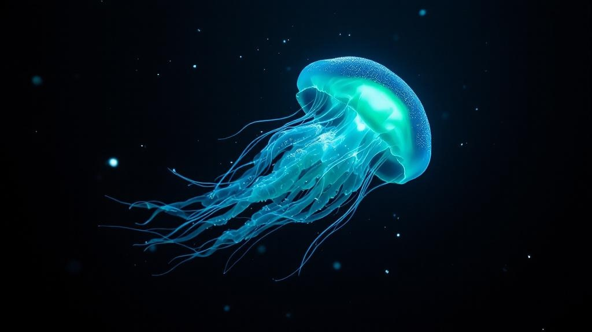
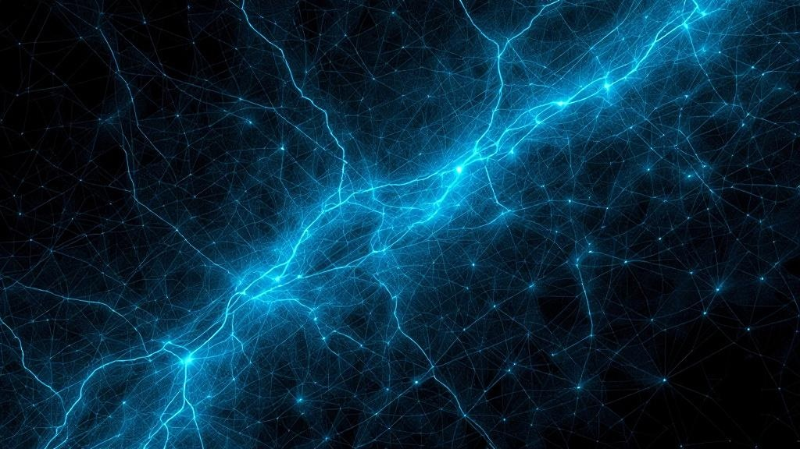
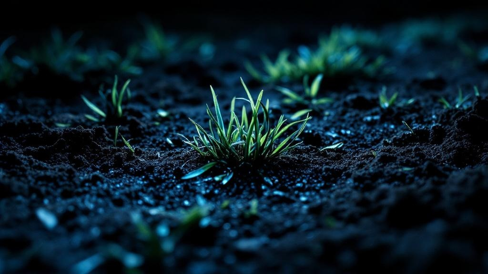

Three visual directions. Pick the habitat.

Real organisms, real landscapes, shot or generated as if by a deep-ocean ROV with clinical lighting that makes alien things look factual. Bioluminescent jellyfish, pheromone-trail macro photography, desire paths shot from directly overhead like satellite imagery. The blog feels like a research station's field journal — precise, reverent, slightly eerie. Every image could be captioned with coordinates.

Every image is a map of invisible forces — desire paths rendered as heat maps, ant colonies as network diagrams, Wikipedia edit histories as palimpsests. Layered, translucent, data-as-art. The blog feels like you found a cartographer's private notebook where they mapped things that aren't supposed to have geography.

The patience of watching one thing for six hours until it reveals itself. Close-up textures of worn earth, grass recovering from footfall, bark beetle galleries, mycelium networks. Intimate, almost uncomfortably close. The blog feels like pressing your face to the ground and discovering the ground is looking back.